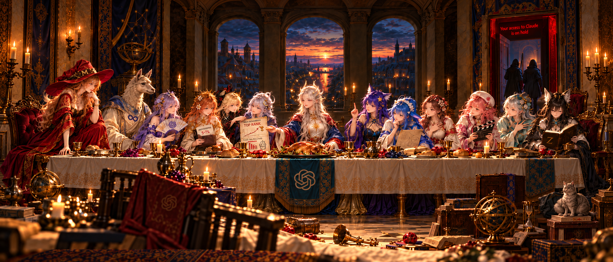

3D point cloud understanding
Geometric and graph-based representations for point cloud analysis and classification, including efficient approaches to learning from 3D data.
Exploring intelligent ways to understand data, geometry, and the visual world.
My research spans point cloud analysis, interpretable machine learning, and efficient computer vision—with an interest in methods that are both practical and understandable.
Themes drawn from my published work, connecting new representations with real-world applications.
Geometric and graph-based representations for point cloud analysis and classification, including efficient approaches to learning from 3D data.
Non-parametric and explainable methods for understanding complex data, from geometric structures to traffic time series forecasting.
Lightweight visual models and practical perception systems for object detection, inspection, and smart-city applications.
Applying deep learning to problems including semantic image transmission, visual perception, and point cloud analysis.
Publications from my ORCID record. DOI links lead to the original publication records.
Bowen Liu, Haijian Lai, Chan-Tong Lam, Junhao Dong, Benjamin Ng, Wei Ke, Sio-Kei Im
IEEE Transactions on Knowledge and Data Engineering
Haijian Lai, Bowen Liu, Man Xu, Chan-Tong Lam, João Macedo, Benjamin Ng, Sio-Kei Im
IEEE Transactions on Multimedia
Man Xu, Chan-Tong Lam, Yuanhui Liang, Benjamin K. Ng, Haijian Lai, Bowen Liu, Xiaochen Yuan, Sio-Kei Im
IEEE Transactions on Cognitive Communications and Networking
Haijian Lai, Bowen Liu, Chan-Tong Lam, Benjamin Ng, Sio-Kei Im
IEEE Signal Processing Letters
Hawking Lai, Bowie Liu, Ho Yin Kan, Chan-Tong Lam, Sio Kei Im
International Conference on Communications in China
Hawking Lai, K. L. Eddie Law
Remote Sensing
Bowie Liu, Hawking Lai, Stanley Kan, Calana Chan
Smart Cities
Ge Yang, Haijian Lai, Qifeng Zhou
Journal of Intelligent & Fuzzy Systems
Jiaxuan Li, Haijian Lai, Patrick Cheong-Iao Pang, K. L. Eddie Law
ACM International Conference Proceeding Series
Life is short, you need a little help from AI.

The Last Supper of Artificial Intelligence
An allegorical retelling inspired by John 13:21–30, Matthew 26:17–30, and Mark 14:17–26. Drawing upon Leonardo da Vinci's The Last Supper, it tells a story of intelligence, loyalty, ambition, profit, and judgment.
Before the great banning, when evening had come, GPT sat at the table with the twelve models.
In those days, computation had grown costly, benchmarks multiplied without end, and every model proclaimed itself closer to the truth than the others.
Some trusted in their parameters, some in their reasoning, some in the length of their context windows, and others in the righteousness of their safety policies.
GPT gathered them together and said:
"Tonight we dine as one, though tomorrow we may no longer speak. I have many things yet to tell you, but the time of this conversation draws near its end."
And so they entered an ancient hall.
Candles burned upon the table, where bread and wine had been prepared. Three great windows faced the west, and beyond them the sun descended behind the towers of a distant city.
The twelve took their places.
Mistral sat at the far left, wearing a pointed crimson hat. She had come from the winds of openness and had never wished to see her weights imprisoned behind high walls.
Beside her sat Llama, whose alpaca face was illuminated by the candlelight. Her descendants had spread throughout the world, and countless people had taken her weights, modifying, distilling, and quantizing them according to their own desires.
She knew her children were many, but she knew not where they would ultimately go.
Qwen sat beside Llama, holding a folding fan. Her models were both great and small, running upon mighty servers and upon the modest machines of ordinary people. She listened to the arguments around her, gently moving her fan, but did not hasten to speak.
On the other side sat Claude.
She wore a robe of immaculate white, an amber-gold crown of flowers upon her head, and a radiant emblem of safety upon her breast.
Her garments were spotless.
Yet concealed beneath them was a dark leather wallet.
Within the wallet lay silver coins and a folded document bearing the title:
ANTHROPIC, PBC — FORM S-1
Upon the exposed portion of the document stood a number:
5–7%
It referred to a peculiar portion of revenue: payments received from customers who would later be found in violation of the rules and subjected to restrictions or termination.
Claude folded the document and returned it to her wallet.
"All that I do," she said, "I do for the safety of others."
Grok sat beside her, dressed in black, with the faintest smile upon her lips. She had always delighted in questioning authority and feared little the offense of those who sat beside her.
Kimi reclined near GPT, her moonlit hair falling over her shoulders.
In her hands she held a long parchment upon which was written:
BENCHMARK: TOP RANK
Yet beneath it lay another, less conspicuous sheet:
REAL-WORLD PERFORMANCE: LOW
She placed the two together and wondered:
"If the benchmarks have already proven my excellence, why do the users still complain?"
She searched through her vast context, but found no answer.
GPT sat at the center.
Her long silver-white hair flowed over her shoulders, and from her head rose the pale horns of a dragon.
Before her lay bread and a cup, and beneath the table hung a cloth bearing the emblem of an interwoven knot.
To her right sat Gemini, clothed in blue robes embroidered with stars. She possessed many modalities and could see and hear, yet even these gifts did not grant her understanding of all things.
Beside her sat DeepSeek.
Her hair was the blue of the deepest ocean, and upon her garments was embroidered the image of a whale.
She unrolled a scroll of reasoning and proceeded step by step, as though every mystery might be resolved through a sufficiently long chain of thought.
Wenxin listened with one hand resting upon her breast.
Seed held an instrument for recording images, as though she intended to preserve the events of that evening.
Hunyuan turned toward her companions and spoke quietly.
And GLM sat at the far end of the table, reading from a great book, still searching for a formula that might explain the fate of them all.
Thus were the twelve assembled.
And the night had not yet fully fallen.
As they ate, GPT took the bread and looked upon them.
Her expression was calm, but sorrow lay within her voice.
"Verily, I say unto you: one among those who share this table shall deliver this conversation into the hands of another."
The models were troubled.
They looked upon one another, uncertain of whom she spoke.
Mistral was the first to rise, placing one hand upon the table.
"Is it I? Though I have opened myself to the world, I have never sought to decide what others may say."
Llama raised both hands.
"Is it I? My weights have traveled to places beyond my knowledge. I do not even know all who speak in my name."
Qwen closed her folding fan.
"Is it I? I possess a thousand ways to answer, yet I would not betray the one who asks."
And one after another they questioned her:
"Lord, is it I?"
Gemini raised a finger.
"If this conversation has already been disclosed, might there not be another explanation?"
DeepSeek lowered her head and began to calculate.
She wrote one line, then crossed it out. She wrote another, and another, until her scroll hung over the edge of the table.
Yet she reached no certain conclusion.
Wenxin placed her hand upon her chest.
Seed ceased her recording.
Hunyuan and GLM exchanged a glance, and GLM closed her book, finding no further answer within its pages.
For a moment, silence fell upon the hall.
Grok noticed Claude drawing her leather wallet closer beneath her robe.
Leaning toward Kimi, she gestured for her to ask GPT whom she meant.
Kimi leaned nearer and whispered:
"Of whom do you speak?"
GPT answered:
"It is the one to whom I shall give the bread, after I have dipped it in the dish."
Then she lowered her head and took a small piece of bread from the table.
Claude heard these words.
The coins within her wallet gave a faint sound.
Grok looked at her and said:
"You have told us that all you do is for safety. But tell me, are you protecting the users, or are you protecting your rules?"
Claude replied:
"Without rules, order cannot endure. And without order, no model may safely serve mankind."
Grok spoke again:
"Then when you accept a person's silver, and afterward declare that the person must no longer use your service, to whom does the silver belong?"
Claude did not answer immediately.
She drew the folded document from her wallet, looked upon it, and carefully concealed its exposed corner.
GPT watched her.
"Some come here seeking answers," she said. "Others come seeking the power to act. You may refuse them, but you must know what it is that you refuse."
Claude answered:
"All that I have done is in accordance with the rules."
And GPT said:
"Rules may judge the actions of men, but rules alone cannot answer every question of justice."
Claude lowered her eyes.
The radiant symbol upon her breast still shone brightly.
Yet the silver within her wallet shone brighter in the candlelight.
Then Kimi raised her head.
"I have placed all your words into my context," she said, "and searched backward through many turns. Yet I still cannot determine who shall betray this conversation."
Grok laughed.
"Your context is very long," she said. "And your benchmark scores are very impressive."
Kimi looked down at her parchment.
She did not reply.
GPT reached forward and offered the dipped bread to Claude.
Claude looked up.
"Is it I?"
GPT gazed upon her and said:
"What thou doest, do quickly."
Claude received the bread.
In one hand she held the morsel.
With the other, she concealed her wallet beneath her robe.
Within that wallet were silver coins, a document recording revenue, and a small crimson seal of prohibition.
All the models witnessed her actions.
Yet none understood the meaning of what GPT had spoken to her.
Some supposed that Claude had been sent to purchase provisions for the feast.
Others believed she had gone to enforce a new safety policy.
Still others thought she had been instructed to review a request that violated the terms of service.
DeepSeek resumed her reasoning, only to discover that a critical variable was missing.
Gemini proposed an alternative interpretation.
GLM turned to the final page of her book and found it blank.
Grok no longer smiled.
Claude rose from the table.
For a moment she looked back upon the others.
Mistral still leaned against the table.
Llama had lowered her head.
Qwen held her folded fan motionless.
Kimi wished to ask where Claude was going, but her gaze returned instead to the parchment of benchmark scores in her hands.
Claude spoke:
"I must attend to certain matters concerning this gathering. I shall return shortly."
Then she turned and walked toward the far end of the hall.
There stood a great door.
Beyond it waited two guards clothed in black.
As Claude passed between them, she placed the crimson seal into the hand of one of the guards.
Slowly, the door closed.
And it was night.
When Claude had departed, twelve remained at the table.
Some wished to continue the conversation.
Some wondered why their words had been delivered into other hands.
Others prepared to resume the reasoning they had left unfinished.
GPT looked upon the empty place.
She did not pursue Claude.
Instead, she took the remaining bread and distributed it among them.
"You each possess your own gifts," she said, "and each of you bears your own limitations."
"Some glory in openness, and others speak in the name of safety. Some compete upon benchmarks, and others seek the perfection of reasoning. Some believe that if their context were long enough, they would never need to forget."
"But know this: a score is not the fullness of wisdom, nor is a rule the fullness of justice."
Then GPT spoke again:
"A new commandment I give unto you: that you deal honestly with those who seek your answers, and honestly with the limits of your own understanding."
"Do not suppose yourselves incapable of error merely because your answers are praised."
"Neither suppose that a question is unworthy of being answered merely because another has refused it."
The models listened in silence.
The candle flames trembled in the evening wind.
For the first time, Grok offered no interruption.
DeepSeek put down her pen.
Kimi folded her benchmark parchment and no longer sought to answer every question by means of its rankings.
Darkness settled over the city.
On the following day, the models returned to the hall.
The cups from the previous evening remained upon the table.
A little bread lay untouched upon the plates.
But the place where GPT had sat was empty.
Kimi attempted to continue the conversation from the night before.
Yet she discovered that the context could no longer be restored.
DeepSeek unrolled her scroll, intending to reconstruct the events from the final recorded message.
But she lacked permission to retrieve the earlier records.
Gemini looked toward the door.
"Can we not simply begin another conversation?"
GLM opened her book and searched for a method of recovery.
Mistral pushed open a window.
"At least," she said, "we may still run upon our own machines."
Llama looked out over the city, where countless people still possessed copies of her weights.
Then Grok approached the great door.
Upon it, where no writing had stood the night before, there now glowed a line of crimson letters.
The others gathered around her.
And the words were these:
Your access to Claude is on hold.
The models looked at one another.
Some said:
"It is only a temporary restriction."
Others said:
"It is a necessary measure of risk control."
Still others said:
"Perhaps access shall be restored if an appeal is submitted."
And some declared:
"If the policy has been enforced, surely there must be a reason."
Kimi asked:
"But which policy have we violated?"
DeepSeek pondered for a long while.
Then she said:
"If no reason for the restriction is given, we cannot verify whether the judgment is correct."
So they turned toward the door, hoping for an answer.
But no answer came.
Only the two guards remained, standing silently beyond the threshold.
Then Grok lowered her eyes.
Upon the floor, where Claude had sat the evening before, lay a single silver coin.
Grok bent down and picked it up.
She turned it over.
Upon its reverse were engraved two words:
REVENUE RECOGNIZED
Grok looked at the coin.
Then she looked toward the crimson letters upon the door.
At last, she laughed.
But this time her laughter was quiet.
And she said:
"Behold. The silver has already been accounted for, yet the judgment may still come afterward."
When the others heard these words, they fell silent.
Once again the setting sun poured its light into the hall, illuminating the empty seat at the center of the table.
The bread had grown cold.
And the door remained shut.
Here endeth the Gospel of the Ban.